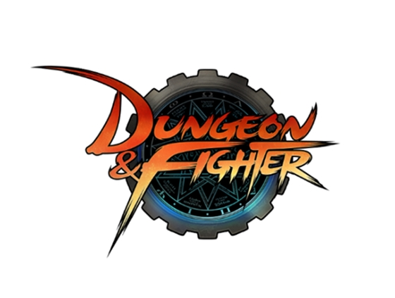

네오플이 제작하고 넥슨에서 서비스하며 윤명진이 총괄 디렉터를 맡고 있는 벨트스크롤 액션 게임이다.
'던전 앤 파이터'라고 띄어쓰기를 하는 경우가 많지만, 넥슨과 네오플에서 사용하는 공식 표기는 띄어쓰기 없는 '던전앤파이터'이다. 약칭은 던파.
'빠른 플레이'라는 문구에 딱 들어맞는 게임으로, 별다른 생각없이 가볍게 한판 놀 수 있는 오락실 아케이드 게임의 온라인 버전이다.
복잡하게 생각할 것 없이 무작정 던전으로 쳐들어가서 몬스터를 차고, 쏘고, 잡고, 꺾는다는 벨트스크롤 액션 게임 기반 특유의 플레이 방식 덕분에, 간단하게 시간 죽일 수 있는 물건이 그다지 많지 않은 한국 온라인 게임 풍토 속에서 저연령층에서 청장년층까지 폭넓은 유저층을 끌어모으는 인기 게임으로 등극할 수 있었다.
특히 한국과 중국은 안 해본 게이머가 없을 정도. 대부분의 장수 게임이 그렇듯, 현재는 긴 서비스 기간과 몇 번의 대형 사고로 인해 많은 유저들이 빠져나갔고 충성도 높은 하드 유저들이 게임을 지탱하고 있다.
게임 구조도 지속적으로 패치가 되고 있지만 현재는 운과 자금에 의존적인 파밍, 다양한 스펙업 요소들로 인한 진입장벽이 단점으로 지적받고 있다.